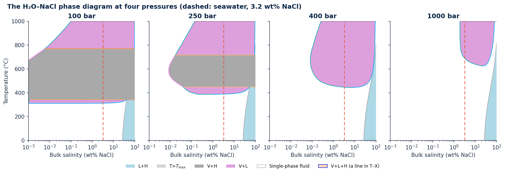
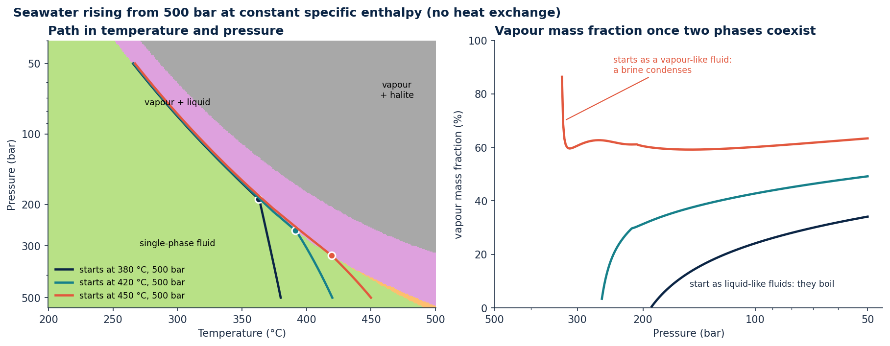
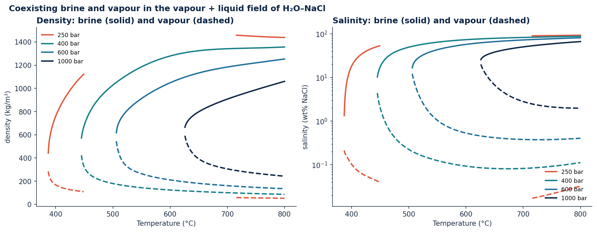
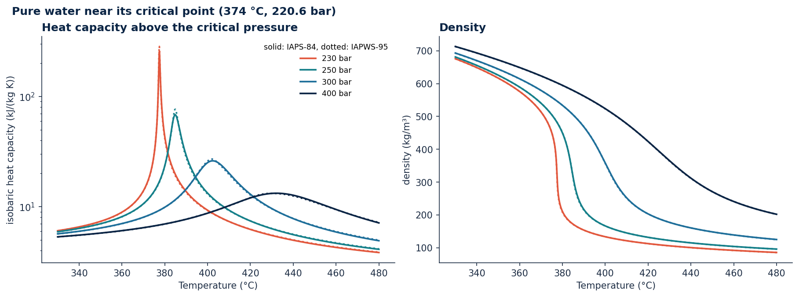
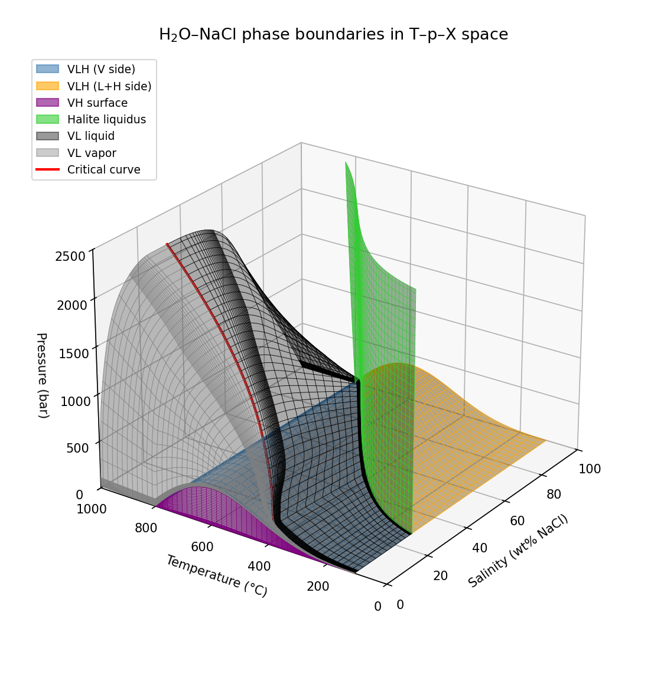

Gallery¶
A few examples of what xThermo computes for hydrothermal fluids. Every figure is made by the Python script shown
below it, with the published version of the library; the scripts run in the documentation's test suite. They use
the phase-region colours of xthermo.plot_slice and a few shared style settings from
docs/gallery/_style.py.
All results come from the H₂O–NaCl model of Driesner & Heinrich (2007) and Driesner (2007) with the IAPS-84 water backend. Where a figure touches a region in which the model's formulation is uncertain, the text says so; the Model scope and limitations page has the details.
More figures: the homepage (the phase diagram at 250 bar and seawater heated at 250 bar), and the phase diagrams and property maps of the Python guide.
How the phase diagram changes with depth¶

The same temperature–salinity section at four pressures, roughly the pressures at the base of 1, 2.5, 4 and 10 km of seawater. At 100 bar a liquid of seawater salinity (dashed) starts to separate into vapour and brine at 312 °C. Between 341 and 771 °C it is vapour + halite: the brine has dried out and salt precipitates. With rising pressure the two-phase fields move to higher temperatures (separation of seawater at 388 °C at 250 bar, 447 °C at 400 bar and 688 °C at 1000 bar). The three-phase assemblage vapour + liquid + halite exists only up to 390 bar, so at 400 and 1000 bar halite and vapour no longer coexist. The halite liquidus on the salt-rich side (blue) barely moves.
Python code
import matplotlib.pyplot as plt
import xthermo
from xthermo import H2ONaCl
import _style as st # fonts and colours of the documentation figures (docs/gallery)
st.apply()
sw = H2ONaCl.cH2ONaCl("IAPS84")
pressures = [100e5, 250e5, 400e5, 1000e5] # Pa
fig, axes = plt.subplots(1, 4, figsize=(13, 4.4), sharey=True, layout="constrained")
handles = {}
for ax, p in zip(axes, pressures):
ax.set_xscale("log")
h = xthermo.plot_slice(ax, sw.Slice_constP(p), x="X", y="T", points=False)
handles.update(h)
ax.set_xlim(1e-3, 100) # wt% NaCl
ax.set_ylim(0, 1000) # °C
ax.set_title(f"{p / 1e5:.0f} bar", loc="center")
ax.axvline(3.2, color=st.CORAL, lw=1.2, ls=(0, (5, 3))) # seawater
if ax is not axes[0]:
ax.set_ylabel("")
# one legend entry for the three-phase assemblage (its temperature differs between the panels)
vlh = [k for k in handles if k.startswith("V+L+H")]
handles = {k: v for k, v in handles.items() if k not in vlh} | {"V+L+H (a line in T–X)": handles[vlh[0]]}
fig.legend(handles.values(), handles.keys(), loc="outside lower center", ncol=7, fontsize="small")
fig.suptitle("The H₂O–NaCl phase diagram at four pressures (dashed: seawater, 3.2 wt% NaCl)", x=0.01, ha="left",
color=st.NAVY, fontweight="bold")
plt.show()
Rising seawater: boiling or condensation¶

Seawater heated at depth rises towards the seafloor and its pressure drops. This example follows three parcels that
start at 500 bar and 380, 420 or 450 °C, keeping their specific enthalpy constant as the pressure falls: an
idealised, adiabatic ascent with no heat exchanged with the surrounding rock and no change in kinetic or potential
energy. Each path is computed with xthermo.hpx at the enthalpy of its starting state.
The two cooler fluids are liquid-like. They reach the two-phase field at 191 and 260 bar (dots) and boil: the vapour fraction grows from zero as the pressure falls, and the fluid cools along the boiling curve. The hottest fluid starts vapour-like (480 kg/m³), close to the critical curve of seawater-like compositions. It enters the two-phase field at 331 bar on the vapour side, so it does not boil: a small amount of brine condenses from it, and the vapour fraction starts near 100 %. At 50 bar all three are vapour + brine at about 266 °C. The library labels all three starting states "Liquid"; above the critical curve this label does not distinguish liquid-like from vapour-like fluids.
The small kinks where the paths cross 374 °C are where the model's vapour–liquid correlations change form at the critical temperature of water. Real upflow exchanges heat with the rock and mixes with other fluids, so these paths show the thermodynamics of decompression, not a model of a vent.
Python code
import matplotlib.pyplot as plt
import numpy as np
import xthermo
from xthermo import H2ONaCl
import _style as st # fonts and colours of the documentation figures (docs/gallery)
st.apply()
sw = H2ONaCl.cH2ONaCl("IAPS84")
X = 0.032 # seawater salinity, kg/kg
p = np.geomspace(500e5, 50e5, 300) # decompression from 500 to 50 bar, Pa
# where seawater is a single phase or vapour + liquid, in temperature and pressure
T_grid = np.linspace(200, 500, 301) + 273.15
P_grid = np.geomspace(40e5, 550e5, 300)
grid = xthermo.tpx(sw, T_grid[None, :], P_grid[:, None], X, errors="nan")
fig, (ax, bx) = plt.subplots(1, 2, figsize=(12, 4.6), layout="constrained")
ax.set_yscale("log")
xthermo.plot_phases(ax, grid, x="T", y="P", legend=False)
ax.invert_yaxis() # pressure decreases upwards, as on the way to the seafloor
for T0, colour in [(380, st.NAVY), (420, st.TEAL), (450, st.CORAL)]:
start = xthermo.tpx(sw, T0 + 273.15, p[0], X) # the fluid at depth
path = xthermo.hpx(sw, start.H, p, X, errors="nan") # same specific enthalpy at every pressure
ax.plot(path.T - 273.15, p / 1e5, color=colour, lw=2.2, label=f"starts at {T0} °C, 500 bar")
boiling = path.has("vapour") & path.has("liquid")
w_vapour = np.where(boiling, path.S_v * path.Rho_v / path.Rho, np.nan) # vapour mass fraction (two phases only)
bx.plot(p / 1e5, 100 * w_vapour, color=colour, lw=2.2)
i = np.flatnonzero(boiling)[0]
ax.plot(path.T[i] - 273.15, p[i] / 1e5, "o", ms=7, mfc=colour, mec="white", mew=1.5)
ticks = [50, 100, 200, 300, 500] # bar
ax.set_yticks(ticks, [str(t) for t in ticks])
ax.set_title("Path in temperature and pressure")
ax.legend(loc="lower left", fontsize="small")
ax.text(300, 300, "single-phase fluid", ha="center", fontsize="small")
ax.text(300, 75, "vapour + liquid", ha="center", fontsize="small")
ax.text(470, 70, "vapour\n+ halite", ha="center", fontsize="small")
bx.set_xscale("log")
bx.set_xticks(ticks, [str(t) for t in ticks])
bx.invert_xaxis()
bx.annotate("starts as a vapour-like fluid:\na brine condenses", (325, 70), xytext=(240, 88), fontsize="small",
color=st.CORAL, arrowprops=dict(arrowstyle="-", color=st.CORAL))
bx.text(150, 8, "start as liquid-like fluids: they boil", fontsize="small", color=st.INK)
bx.set_xlabel("Pressure (bar)")
bx.set_ylabel("vapour mass fraction (%)")
bx.set_ylim(0, 100)
bx.set_title("Vapour mass fraction once two phases coexist")
fig.suptitle("Seawater rising from 500 bar at constant specific enthalpy (no heat exchange)", x=0.01, ha="left",
color=st.NAVY, fontweight="bold")
plt.show()
Coexisting brine and vapour¶

Inside the vapour + liquid field a fluid splits into a dense, salty brine and a light, nearly salt-free vapour. The
figure shows both phases along four isobars. The compositions are the library's V+L compositions (XL_VL,
XV_VL), and the densities come from xthermo.tpx at a bulk salinity between the two, which lies inside the
two-phase field.
At each pressure the two branches meet at the critical curve, where brine and vapour become identical. Away from it the density contrast, the driving force for the gravitational separation of the two phases, reaches 1000 kg/m³ and more, and the vapour carries orders of magnitude less salt than the brine. At 250 bar the two-phase field is interrupted between 449 and 716 °C, where vapour and halite coexist instead (see the first figure). Higher pressure brings the phases closer: the critical curve moves to higher temperature and the vapour holds more salt.
The figure stops at 800 °C. Above the melting point of NaCl (800.7 °C) the published equation for the vapour composition is incomplete, and xThermo's vapour salinities differ from those of the model author's program by up to about 24 % at 1000 °C (details). Brine densities above 600 °C below 390 bar use the model's high-temperature density extrapolation.
Python code
import matplotlib.pyplot as plt
import numpy as np
import xthermo
from xthermo import H2ONaCl
import _style as st # fonts and colours of the documentation figures (docs/gallery)
st.apply()
sw = H2ONaCl.cH2ONaCl("IAPS84")
T = np.linspace(380, 800, 421) + 273.15 # K; up to 800 °C (see the text)
colours = {250e5: st.CORAL, 400e5: st.TEAL, 600e5: "#1f6f9a", 1000e5: st.NAVY}
fig, (ax, bx) = plt.subplots(1, 2, figsize=(12, 4.6), layout="constrained")
for p, colour in colours.items():
# compositions of the coexisting liquid and vapour; a bulk salinity between them lies in the two-phase field
x_l = np.array(sw.XL_VL(T, np.full_like(T, p)))
x_v = np.array(sw.XV_VL(T, np.full_like(T, p)))
s = xthermo.tpx(sw, T, p, 0.5 * (x_l + x_v), errors="nan", absent="nan")
two_phase = s.ok & s.has("liquid") & s.has("vapour") & ~s.has("halite")
rho_l = np.where(two_phase, s.Rho_l, np.nan)
rho_v = np.where(two_phase, s.Rho_v, np.nan)
label = f"{p / 1e5:.0f} bar"
ax.plot(T - 273.15, rho_l, color=colour, lw=2, label=label)
ax.plot(T - 273.15, rho_v, color=colour, lw=2, ls="--")
bx.semilogy(T - 273.15, np.where(two_phase, 100 * s.X_l, np.nan), color=colour, lw=2, label=label)
bx.semilogy(T - 273.15, np.where(two_phase, 100 * s.X_v, np.nan), color=colour, lw=2, ls="--")
ax.set_xlabel("Temperature (°C)")
ax.set_ylabel("density (kg/m³)")
ax.set_title("Density: brine (solid) and vapour (dashed)")
ax.legend(fontsize="small")
bx.set_xlabel("Temperature (°C)")
bx.set_ylabel("salinity (wt% NaCl)")
bx.set_title("Salinity: brine (solid) and vapour (dashed)")
bx.legend(fontsize="small", loc="lower right")
fig.suptitle("Coexisting brine and vapour in the vapour + liquid field of H₂O–NaCl", x=0.01, ha="left",
color=st.NAVY, fontweight="bold")
plt.show()
Water near its critical point¶

Above its critical pressure (220.6 bar) water passes continuously from a dense, liquid-like state to a light, vapour-like one, without boiling. Where this change is fastest, the heat capacity has a sharp maximum: water then absorbs a lot of heat for a small temperature change. The maximum is highest and narrowest just above the critical pressure (230 bar) and broadens and shifts to higher temperatures with pressure. This matters for heat transport in hydrothermal systems at supercritical conditions.
The two water formulations available in xThermo (solid: IAPS-84, the basis of the H₂O–NaCl model; dotted: IAPWS-95) agree closely except near the maximum at 230 bar, where the peak heights differ by about 10 %. Close to the critical point both are less certain, and the published validity of IAPS-84 excludes a small region around it. The peak heights shown also depend on the 0.1 K temperature spacing.
Python code
import matplotlib.pyplot as plt
import numpy as np
import xthermo
from xthermo import H2O
import _style as st # fonts and colours of the documentation figures (docs/gallery)
st.apply()
models = {"IAPS-84": H2O.cIAPS84(), "IAPWS-95": H2O.cIAPWS95()}
T = np.linspace(330, 480, 1501) + 273.15 # K, steps of 0.1 K
colours = {230e5: st.CORAL, 250e5: st.TEAL, 300e5: "#1f6f9a", 400e5: st.NAVY}
fig, (ax, bx) = plt.subplots(1, 2, figsize=(12, 4.4), layout="constrained")
for p, colour in colours.items():
for (name, water), ls in zip(models.items(), ["-", ":"]):
s = xthermo.tpx(water, T, p, errors="nan")
label = f"{p / 1e5:.0f} bar" if name == "IAPS-84" else None
ax.semilogy(T - 273.15, s.Cp / 1e3, color=colour, ls=ls, lw=1.8, label=label)
bx.plot(T - 273.15, s.Rho, color=colour, ls=ls, lw=1.8, label=label)
ax.set_xlabel("Temperature (°C)")
ax.set_ylabel("isobaric heat capacity (kJ/(kg K))")
ax.set_title("Heat capacity above the critical pressure")
ax.legend(title="solid: IAPS-84, dotted: IAPWS-95", fontsize="small", title_fontsize="small")
bx.set_xlabel("Temperature (°C)")
bx.set_ylabel("density (kg/m³)")
bx.set_title("Density")
fig.suptitle("Pure water near its critical point (374 °C, 220.6 bar)", x=0.01, ha="left", color=st.NAVY,
fontweight="bold")
plt.show()
The phase diagram in three dimensions¶

The sections above are slices through one three-dimensional structure in temperature, pressure and salinity. The vapour + liquid region is a dome bounded by its liquid limb (dark grey) and its vapour limb (light grey), which meet along the critical curve (red) on its crest. Below it lies the three-phase surface vapour + liquid + halite, which at each temperature has a single pressure and spans the salinities from the vapour to halite (blue and orange parts). Beneath that, vapour coexists with halite (purple: the vapour side). On the salt-rich side, the halite liquidus (green) separates liquid from liquid + halite.
The salinity axis is linear, so the vapour compositions, often below 0.01 wt% NaCl, lie close to the zero-salinity plane; the sections above show them on a logarithmic axis.
Python code
import warnings
import numpy as np
import matplotlib.pyplot as plt
from matplotlib.lines import Line2D
from matplotlib.patches import Patch
from matplotlib.colors import to_hex
from xthermo import H2ONaCl
warnings.filterwarnings("ignore", category=RuntimeWarning)
sw = H2ONaCl.cH2ONaCl("IAPS84")
# ── VLH surface (V→L side and L→H side) ──────────────────────────────────
nT = 80
nT_high = nT // 3
T_high = H2ONaCl.T_MIN_VLH + (sw.Tmax_VLH() - H2ONaCl.T_MIN_VLH) * 0.95
T_vlh = np.append(np.linspace(H2ONaCl.T_MIN_VLH, T_high, nT - nT_high),
np.linspace(T_high, sw.Tmax_VLH(), nT_high))
P_vlh = np.array(sw.P_VLH(T_vlh))
Xl_vlh, Xv_vlh = np.array(sw.X_VLH(T_vlh, P_vlh))
n_log, n_lin = 20, 40
nX = n_log + n_lin
TT_vlh = np.tile(T_vlh, (nX, 1))
PP_vlh = np.tile(P_vlh, (nX, 1))
XX_V2L = np.zeros_like(TT_vlh)
XX_L2H = np.zeros_like(TT_vlh)
for j in range(len(T_vlh)):
XX_V2L[:, j] = np.append(
10 ** np.linspace(np.log10(max(Xv_vlh[j], 1e-10)), np.log10(0.01), n_log),
np.linspace(0.01, Xl_vlh[j], n_lin))
XX_L2H[:, j] = np.linspace(Xl_vlh[j], 1.0, nX)
# ── VH surface ─────────────────────────────────────────────────────────────
nP = 60
T_vh = np.linspace(H2ONaCl.T_MIN_VLH, sw.Tmax_VLH(), nT)
P_vlh2 = np.array(sw.P_VLH(T_vh))
TT_vh = np.tile(T_vh, (nP, 1))
PP_vh = np.zeros_like(TT_vh)
np_low = nP // 3
for i in range(len(T_vh)):
p_low = sw.pmin() + (P_vlh2[i] - sw.pmin()) * 0.1
PP_vh[:, i] = np.append(np.linspace(sw.pmin(), p_low, np_low),
np.linspace(p_low, P_vlh2[i], nP - np_low))
XX_VH = np.array(sw.X_VH(TT_vh.ravel(), PP_vh.ravel())).reshape(TT_vh.shape)
# ── Halite liquidus ────────────────────────────────────────────────────────
TT_lh = np.tile(T_vh, (nP, 1))
PP_lh = np.zeros_like(TT_lh)
for i in range(len(T_vh)):
PP_lh[:, i] = np.linspace(P_vlh2[i], 2500e5, nP)
XL_LH = np.array(sw.X_HaliteLiquidus(TT_lh.ravel(), PP_lh.ravel())).reshape(TT_lh.shape)
# ── VL surfaces ────────────────────────────────────────────────────────────
pb_l = sw.PhaseBoundary_VL_DeformLinear(H2ONaCl.Liquid)
pb_v = sw.PhaseBoundary_VL_DeformLinear(H2ONaCl.Vapor)
# ── Critical curve ─────────────────────────────────────────────────────────
T_crit = np.linspace(sw.get_pWater().T_critical(), sw.Tmax(), 80)
p_crit, X_crit = np.array(sw.P_X_Critical(T_crit))
# ── Plot ───────────────────────────────────────────────────────────────────
fig = plt.figure(figsize=(12, 9))
ax = fig.add_subplot(111, projection='3d', facecolor='None')
legend = [] # 3-D surfaces give no usable legend handles: one coloured swatch per surface
def surf(TT, PP, XX, color, label):
ax.plot_surface(XX * 100, TT - 273.15, PP / 1e5,
color=color, alpha=0.45, linewidth=0)
ax.plot_wireframe(XX * 100, TT - 273.15, PP / 1e5,
color=color, lw=0.4)
legend.append(Patch(fc=color, ec=color, alpha=0.6, label=label))
surf(TT_vlh, PP_vlh, XX_V2L, 'steelblue', 'VLH (V side)')
surf(TT_vlh, PP_vlh, XX_L2H, 'orange', 'VLH (L+H side)')
surf(TT_vh, PP_vh, XX_VH, 'purple', 'VH surface')
surf(TT_lh, PP_lh, XL_LH, 'limegreen', 'Halite liquidus')
for pb, color, label in [(pb_l, 'black', 'VL liquid'), (pb_v, 'gray', 'VL vapor')]:
T2 = np.array(pb.T); P2 = np.array(pb.p); X2 = np.array(pb.X)
ax.plot_surface(X2 * 100, T2 - 273.15, P2 / 1e5, color=color, alpha=0.3, linewidth=0)
ax.plot_wireframe(X2 * 100, T2 - 273.15, P2 / 1e5, color=color, lw=0.4)
legend.append(Patch(fc=color, ec=color, alpha=0.4, label=label))
ax.plot(X_crit * 100, T_crit - 273.15, p_crit / 1e5, color='red', lw=2)
legend.append(Line2D([], [], color='red', lw=2, label='Critical curve'))
ax.plot(Xv_vlh * 100, T_vlh - 273.15, P_vlh / 1e5, color='red', lw=1)
ax.plot(Xl_vlh * 100, T_vlh - 273.15, P_vlh / 1e5, color='green', lw=1)
ax.set_xlabel('Salinity (wt% NaCl)', fontsize=10, labelpad=8)
ax.set_ylabel('Temperature (°C)', fontsize=10, labelpad=8)
ax.set_zlabel('Pressure (bar)', fontsize=10, labelpad=8)
ax.set_xlim(0, 100); ax.set_ylim(0, 1000); ax.set_zlim(0, 2500)
ax.view_init(elev=25, azim=-145)
ax.set_title(r'H$_2$O–NaCl phase boundaries in T–p–X space', fontsize=13, pad=12)
ax.legend(handles=legend, loc='upper left', fontsize=9)
ax.set_box_aspect(None, zoom=0.88) # leaves room for the axis labels
plt.show()